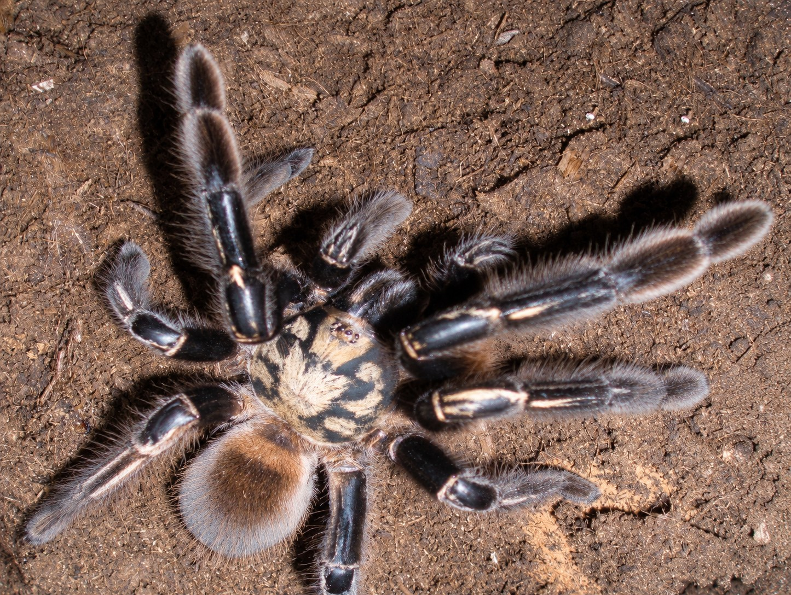

A retreat-building forest tarantula. Adults live in soil burrows, while field research in French Guiana documents a change in retreat use during development.
Species profile · Morgana
Ephebopus murinus
Skeleton tarantula
Meet Morgana, the Ephebopus murinus in the Introvertebrates collection: a burrowing tarantula whose pale leg markings give the species its skeleton-spider nickname.

Scientific nameEphebopus murinus
FamilyTheraphosidae
Native rangeFrench Guiana, Suriname and Brazil
TaxonomyAccepted species
SexNot confirmed
In the wild
Natural history.
Pale markings contrast with the dark legs. Ephebopus also carries specialised urticating setae on the pedipalps, rather than the abdominal patch familiar from many other American tarantulas.
This profile separates the current resident’s documented history from species-level research. The photograph is a labelled species archive image.
Taxonomy and range
Ephebopus murinus (Walckenaer, 1837) is the type species of Ephebopus. The World Spider Catalog accepts the name and records French Guiana, Suriname and Brazil. A 2008 revision provides the morphological baseline for the genus.
Burrows, shelter, and activity
Field observations describe adult burrows with silk-supported entrances. Young spiders can use elevated retreats, including bromeliads, so the label burrowing tarantula does not describe every life stage equally well.
Feeding ecology
A retreat provides both shelter and a base for detecting nearby prey. Interpreting feeding in captivity requires the animal’s own records; a species description cannot establish Morgana’s feeding frequency or preferred prey.
Defence, senses, and movement
The palpal urticating-seta pads are a distinctive feature of the genus. They are defensive structures, and their position shows why not every American tarantula uses the same hair-flicking mechanism.
Conservation context
Status, trade & uncertainty.
IUCN evaluates extinction risk; CITES regulates international trade. They answer different questions, and missing data should remain visible.
Assessment not verified
A species-level IUCN category has not been verified for this profile. Lack of a published category here is not evidence of low extinction risk.
Check current listings
Consult the current CITES Checklist and relevant national requirements before any transfer. No legal status is inferred from the presence of the species in captivity.
What the evidence supports
The taxonomic sources establish a name and distribution, not a global population trend. Captive availability cannot substitute for field population data.
Make provenance visible
Keep provenance and acquisition records, and distinguish captive observations from claims about wild abundance.
Taxonomy and linked literature reviewed 18 October 2026. A Red List category and international trade status are not asserted here without a verified assessment or listing.
Life in the collection
Meet Morgana.
Morgana is the current resident behind this profile. The archive photograph illustrates the species, but has not been confirmed as Morgana. Measurements, sex, acquisition history and feeding observations will be added only when verified for this individual.
Personal observations
From the Codex.
Introvertebrates Codex
Morgana · care history
Time in care, feeding records, moults and measurements. These are observations from the Introvertebrates collection, not species-wide averages.
No public care metrics have been published for this resident yet.
Private notes and identifying details are kept off the website.
Continue exploring
Related profiles.
Read further
Sources.
- World Spider Catalog — Ephebopus murinusView the source.
- West and colleagues (2008) — revision of EphebopusView the source.
- Marshall and West (2008) — changes in retreat use during developmentView the source.